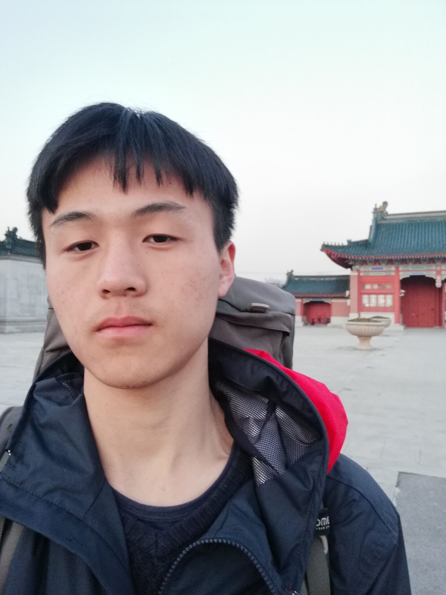
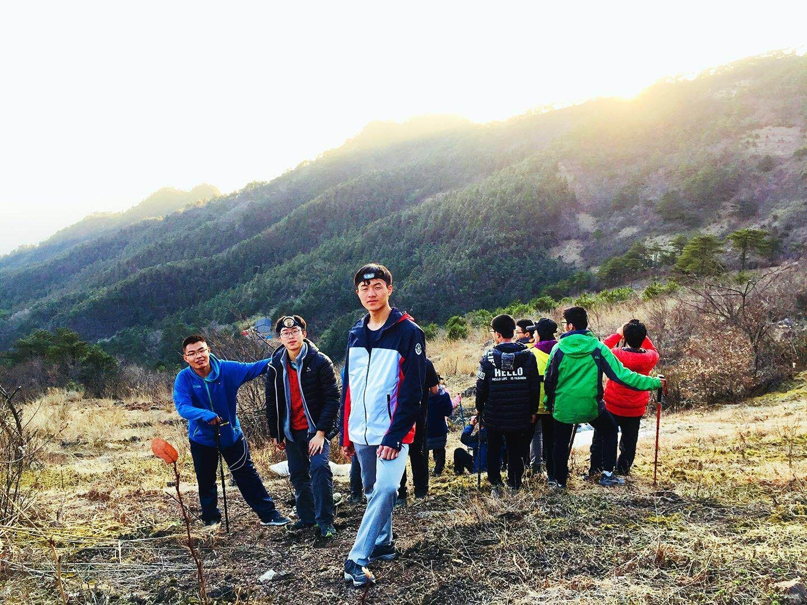
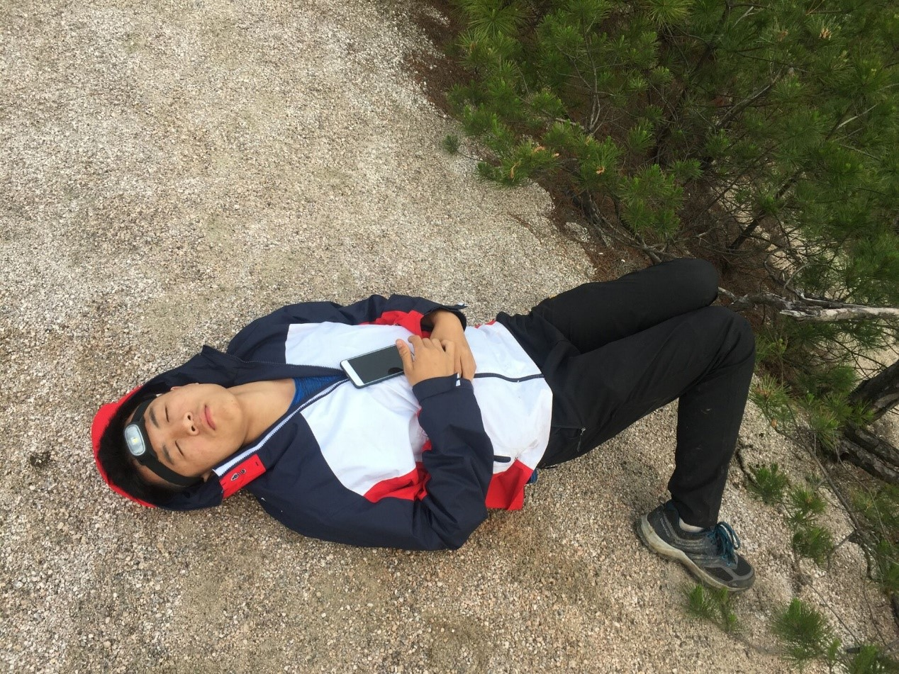
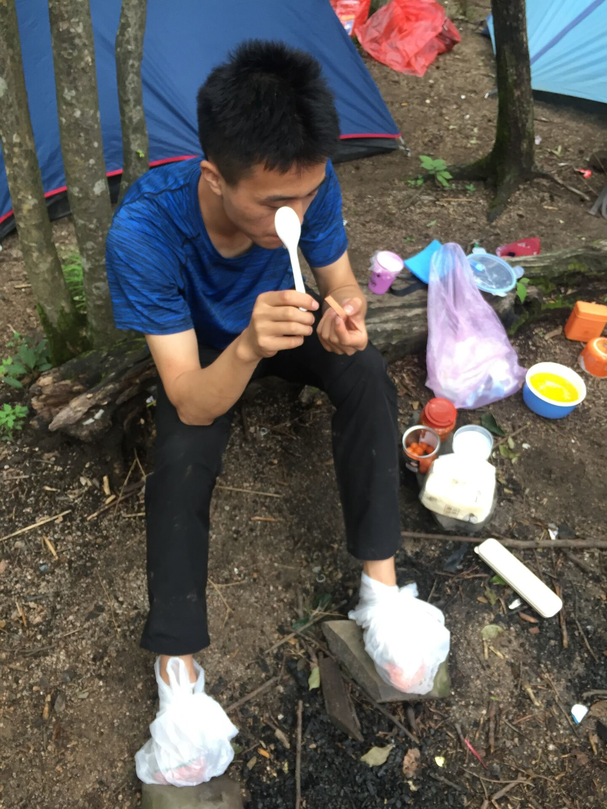
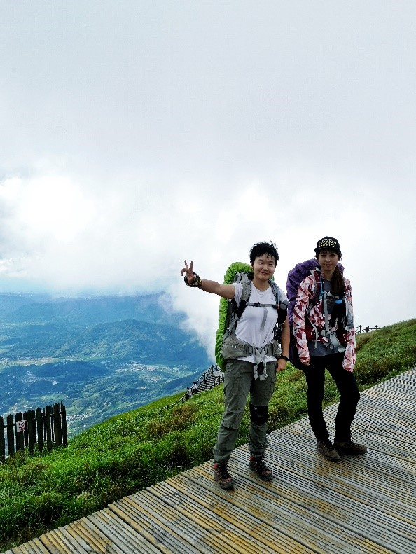
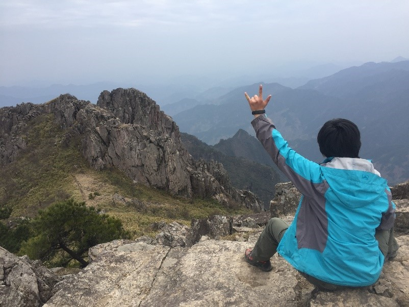
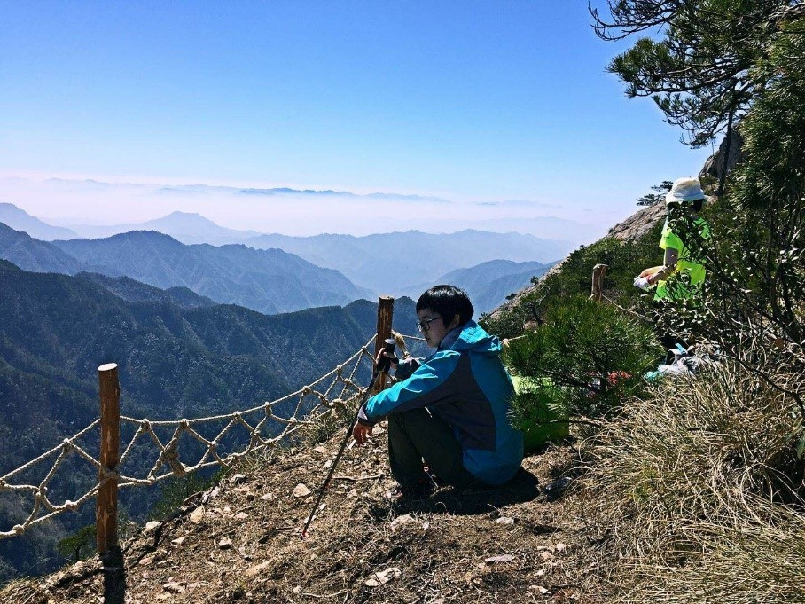
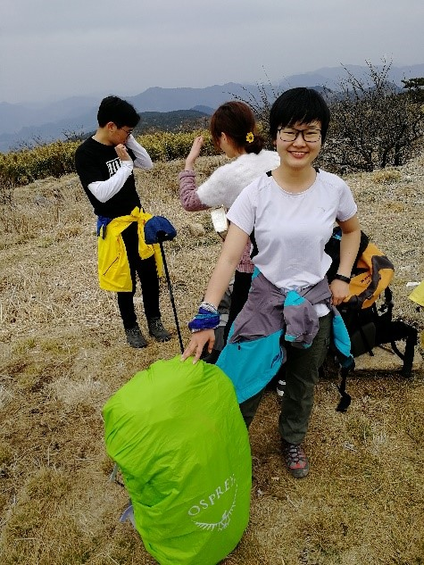
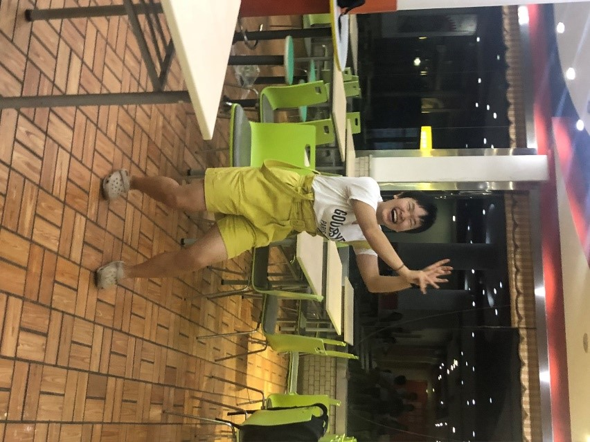

发信人: primrose (Primrose), 信区: outdoor
标 题: 【团爆】攀岩队~
发信站: 饮水思源 (2018年09月19日17:05:11 星期三)
队长：焦非庸
从第一学期较少参加活动的死鱼，到第二学期开启活跃模式，先后参加技挑，领队培
训，攀岩比赛等，有趣的事舍不得钱到接近乱花钱的改变（ke金才能变强）
 screen.width - 200){this.width = screen.width - 200}">
还记得第一次买的登山包
大家千万别买便宜包（血泪教训）
上七尖不到一小时
腰带就断了（是的，腰带，不是腰扣，没办法修的那种）
 screen.width - 200){this.width = screen.width - 200}">
然后？在他们觉得我要下撤的时候
身为第一次当副领队的我背着十几公斤的东西走完了三天七尖
那酸爽，好在小时候有背着很重书包走9公里多上学和田家的经历，可能这方面还行
还是挺具有挑战性的
 screen.width - 200){this.width = screen.width - 200}">
（跟zx同款姿势摆拍23333）
拖着感冒的身体上七尖，遇到蚂蝗太可怕了，但只有领队老铁被咬了（笑）
回来感冒差不多好了（原来出线还可以治感冒耶）
 screen.width - 200){this.width = screen.width - 200}">
我们的攀岩队长表示他吃饭也很不错( •̀ ω •́ )y
副队长：贺薇
新生杯被拐进了野协的坑，现在混迹各个部门打杂，喜欢当条咸鱼，也喜欢比较有挑
战性的事（所以我常在咸鱼瘫的时候想着要变强）。爱吃爱玩，但不爱被拍（得很chun的
）照。想出更多的线，到更多地方去看一看。
以及，加入野协使我变糙（微笑）。
 screen.width - 200){this.width = screen.width - 200}">
左：菜狗 右：菜鸡 （滑稽）
副队长：张雨欣
野协第一菜狗子。大一进的协会，现任装备部部长。同时常在攀岩队活动，又兼任岩
队最低水平。出了那么多次线之后的愿望就是——负重小于10kg，一定要一跤也不摔地走
完一条线（屁股不着地不算摔跤）。
背着自己的老婆出线的感觉真是棒棒哒！希望还能背小老婆走一次线啦！
变强！变强才是最大的目标。
 screen.width - 200){this.width = screen.width - 200}">
 screen.width - 200){this.width = screen.width - 200}">
 screen.width - 200){this.width = screen.width - 200}">
 screen.width - 200){this.width = screen.width - 200}">
（吃瓜大赛的照片已经成梗了）
--
※ 来源:·饮水思源 bbs.sjtu.edu.cn·[FROM: 59.78.60.207]
|